| 日付 | 2010年5月16日（日） |
|---|---|
| 山域 | 三浦半島 |
| メンバー | 友人（男1女1） |
| 山行形態 | 日帰り |
| アクセス | 電車、バス |
| ルート (Map) | 安針塚駅→塚山公園→大楠山→前田橋 |
三浦半島には、標高は高くないがそれなりに魅力ある山が点在している。
房総半島と良く似たイメージの山域だが、こちらは交通の便が非常に良い。
今回は三浦半島の最高峰・大楠山に登ることにする。
東京湾から相模湾まで、三浦半島を横断するコースだ。
10:39 安針塚駅到着。標高20m。
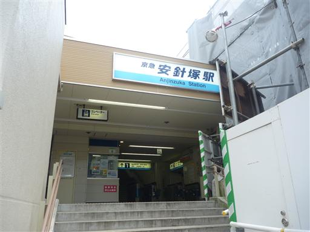
今回は駅からハイキング。民家の間を抜けていく。
標高は低くても山がちな地形のため、坂は急だ。
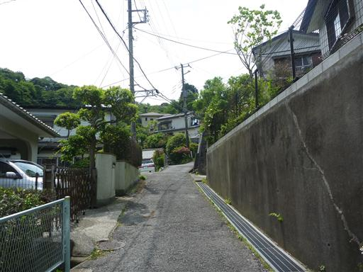
車道を一登りで、塚山公園に到着する。
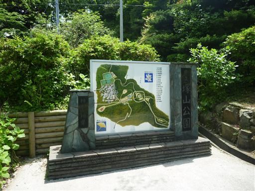
展望台に登ると、東京湾が見渡せる。
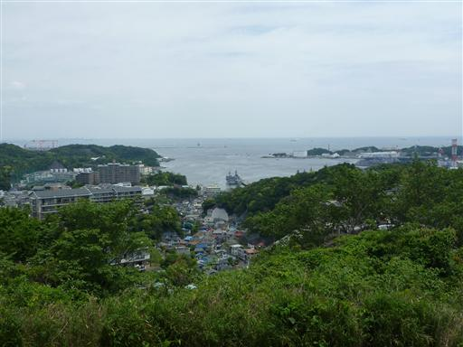
逆方向には、これから目指す大楠山が遠くに望める。
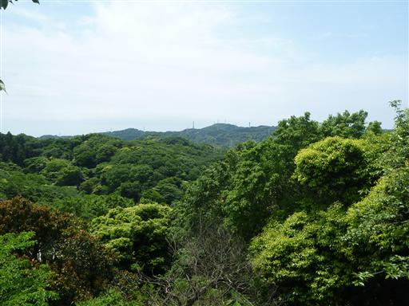
塚山公園にある三浦按針とその妻の墓。
本名はウィリアム・アダムスでイギリス人だ。
外交顧問として家康に重用されたらしい。
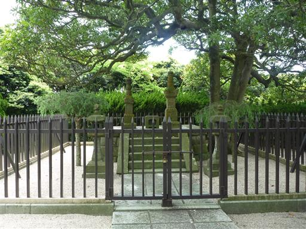
足元にやたら小さい鳥居が置かれている。
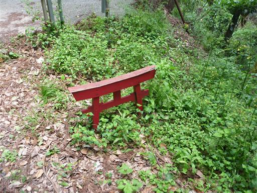
塚山公園を離れると、しばらくは車道歩き。
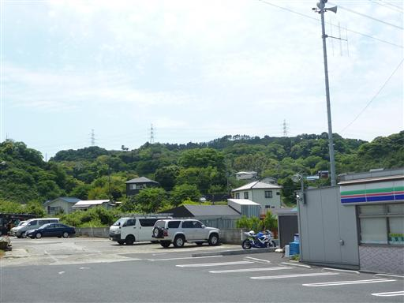
竹林に今年出てきた筍がたくさん生えている。
これだけ大きくなってしまったらもう食べられない。
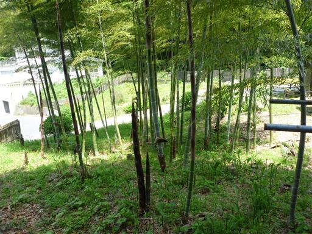
45分ほどの車道歩きで、ようやく大楠山登山道入口に到着する。
沢沿いにつけられた気持ちの良い登山道だ。
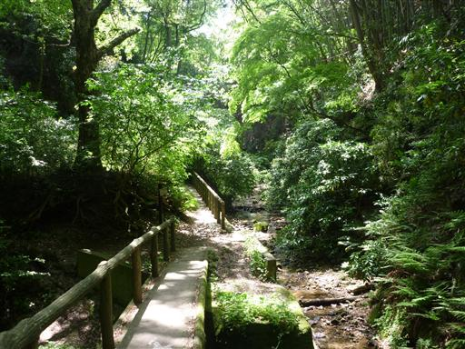
沢の石は赤みがかっている。
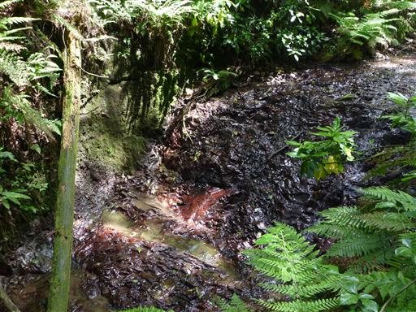
標高の低い山だが、急な階段が続き結構辛い。
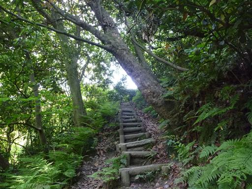
鮮やかなシダ植物が辺り一面繁茂している。

山頂近くになると傾斜が緩くなり、ゴルフ場が現れる。
フェンスで作られたトンネルの中を歩いていく。
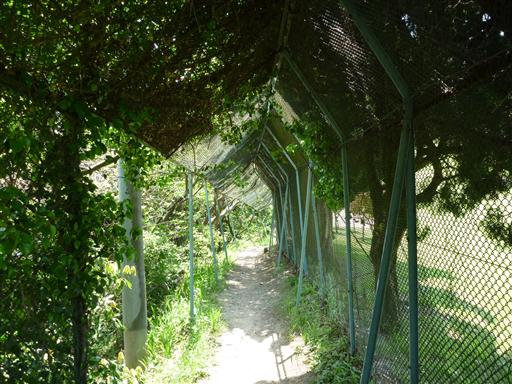
13:12 大楠山山頂到着。標高241m。
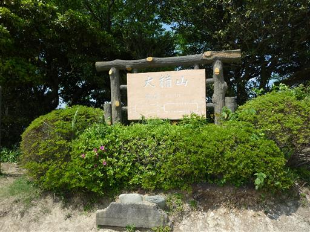
山頂は大きく開けている。
単純な螺旋ではない、複雑な形の展望台が置かれている。
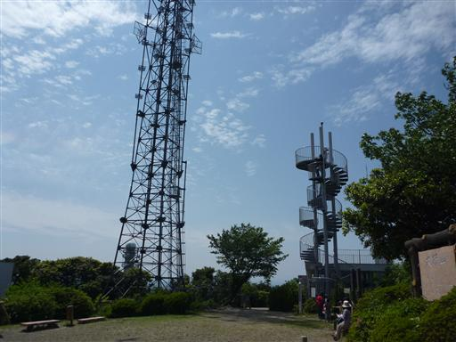
展望台に登ると三浦半島が一望できる。
先に見えるのは三浦半島の先端部分だ。
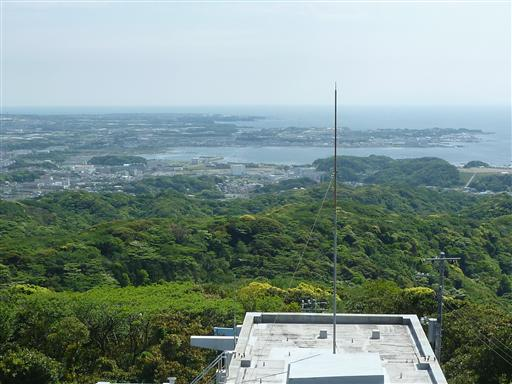
東の方角には青い東京湾、その向うに房総半島が見える。
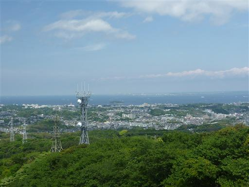
この展望台は高く、下を覗くとそれなりの高度感がある。
人が下から登ってくると結構揺れる。
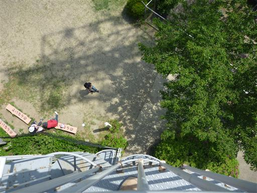
満開のツツジの花。たくさんのアゲハチョウが飛んでいる。
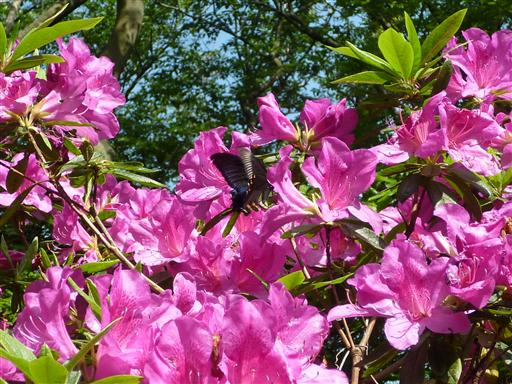
山頂から少し下ったところにも古い展望台がある。ここからは大楠山の眺めが良い。
高かった展望台よりも、右の鉄塔2本の方が遥かに高い。
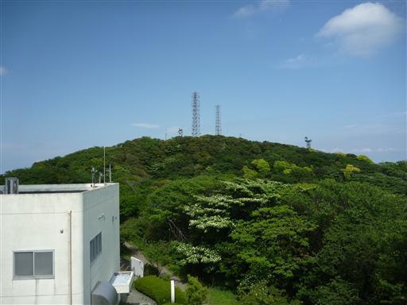
足元に大きな虫を発見。マイマイカブリだろうか？
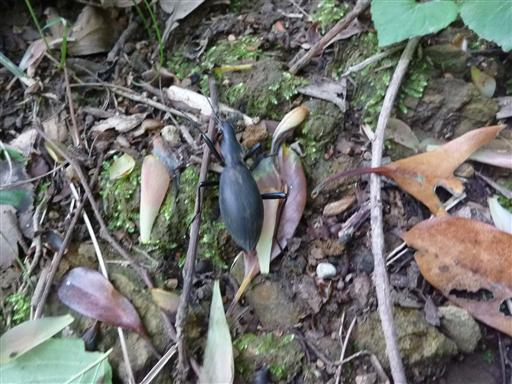
下山道は比較的ゆるやかな傾斜の歩きやすい道が続く。
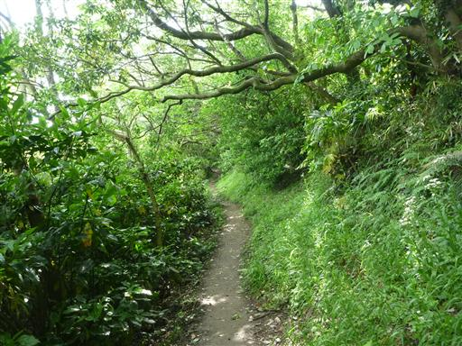
下山地点からは車道に沿って整備された沢沿いの遊歩道を歩く。
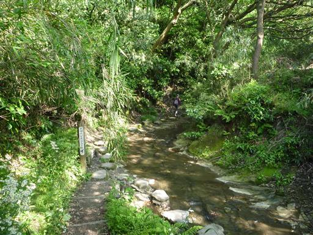
歩きやすくて気持ちの良い遊歩道。
人工物が近くにありすぎるのと、短いのが少々欠点。
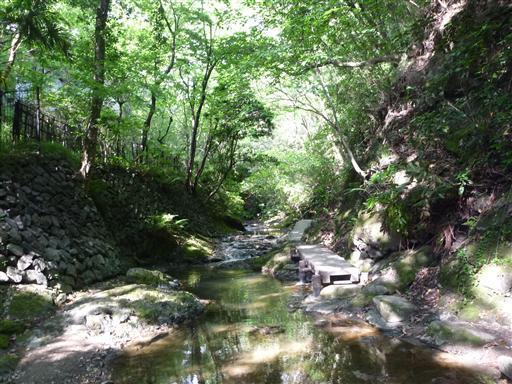
15:31 前田橋バス停到着。標高15m。
山は低いが、東京湾から相模湾まで海を見渡せる、
展望の良いお手軽ハイキングだった。
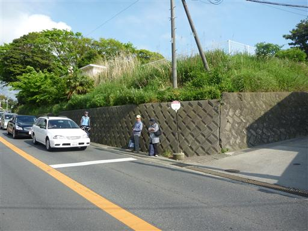